EDA#
Librerias#
import warnings
warnings.filterwarnings('ignore')
import numpy as np
import pandas as pd
import matplotlib.pyplot as plt
import seaborn as sns
from itertools import combinations
from scipy.stats import shapiro, normaltest, kstest,f_oneway, kruskal, chi2_contingency, levene,mannwhitneyu
from statsmodels.stats.outliers_influence import variance_inflation_factor
Cargado de datos#
df=pd.read_csv("data/data.csv",na_values=[' '])
df.head()
| customerID | gender | SeniorCitizen | Partner | Dependents | tenure | PhoneService | MultipleLines | InternetService | OnlineSecurity | ... | DeviceProtection | TechSupport | StreamingTV | StreamingMovies | Contract | PaperlessBilling | PaymentMethod | MonthlyCharges | TotalCharges | Churn | |
|---|---|---|---|---|---|---|---|---|---|---|---|---|---|---|---|---|---|---|---|---|---|
| 0 | 7590-VHVEG | Female | 0 | Yes | No | 1 | No | No phone service | DSL | No | ... | No | No | No | No | Month-to-month | Yes | Electronic check | 29.85 | 29.85 | No |
| 1 | 5575-GNVDE | Male | 0 | No | No | 34 | Yes | No | DSL | Yes | ... | Yes | No | No | No | One year | No | Mailed check | 56.95 | 1889.50 | No |
| 2 | 3668-QPYBK | Male | 0 | No | No | 2 | Yes | No | DSL | Yes | ... | No | No | No | No | Month-to-month | Yes | Mailed check | 53.85 | 108.15 | Yes |
| 3 | 7795-CFOCW | Male | 0 | No | No | 45 | No | No phone service | DSL | Yes | ... | Yes | Yes | No | No | One year | No | Bank transfer (automatic) | 42.30 | 1840.75 | No |
| 4 | 9237-HQITU | Female | 0 | No | No | 2 | Yes | No | Fiber optic | No | ... | No | No | No | No | Month-to-month | Yes | Electronic check | 70.70 | 151.65 | Yes |
5 rows × 21 columns
Funciones#
def Summary(data, sheet):
print(f"Hoja: {sheet}")
# Crear la tabla de resumen
resumen = {
"Cantidad de filas": data.shape[0],
"Cantidad de columnas": data.shape[1],
"Datos faltantes": data.isnull().sum().sum(),
"Filas duplicadas": data.duplicated().sum()
}
# Convertir el resumen en un DataFrame
ResumenHoja = pd.DataFrame(resumen, index=["Resumen"])
print("\nResumen:")
display(ResumenHoja)
print("\nEncabezado:")
display(data.head())
def graficar_distribuciones(df, columnas, bins=30):
sns.set(style="whitegrid", palette="muted")
n = len(columnas)
fig, axes = plt.subplots(nrows=n, ncols=2, figsize=(12, 4*n))
for i, col in enumerate(columnas):
# Histograma con KDE
sns.histplot(data=df, x=col, kde=True, bins=bins, ax=axes[i,0], color="skyblue")
axes[i,0].set_title(f"Histograma de {col}", fontsize=12)
axes[i,0].set_xlabel("")
axes[i,0].set_ylabel("Frecuencia")
# Boxplot
sns.boxplot(data=df, x=col, ax=axes[i,1], color="lightcoral")
axes[i,1].set_title(f"Boxplot de {col}", fontsize=12)
axes[i,1].set_xlabel("")
plt.suptitle("Distribuciones de variables numéricas", fontsize=16, y=1.02)
plt.tight_layout()
plt.show()
def graficar_categoricas(df,cat):
for col in cat:
df[col].value_counts()
sns.countplot(data=df, x=col, order=df[col].value_counts().index)
plt.title(f'Distribución de {col}')
plt.xticks(rotation=45)
plt.show()
def prueba_normalidad(df, alpha=0.05):
resultados = []
# Detectar variables numéricas
numericas = df.select_dtypes(include=[np.number]).columns
for col in numericas:
serie = df[col].dropna()
if len(serie) < 8: # muy pocas muestras → no confiable
resultados.append({
"variable": col,
"n_muestras": len(serie),
"shapiro_p": np.nan,
"dagostino_p": np.nan,
"ks_p": np.nan,
"es_normal (alpha=0.05)": "Muestra insuficiente"
})
continue
# Shapiro-Wilk (solo si n <= 5000, más grande no recomendado)
stat_shapiro, p_shapiro = shapiro(serie) if len(serie) <= 5000 else (np.nan, np.nan)
# D’Agostino y Pearson
stat_dagostino, p_dagostino = normaltest(serie)
# Kolmogorov-Smirnov contra normal estándar
stat_ks, p_ks = kstest(
(serie - serie.mean()) / serie.std(ddof=0), 'norm'
)
# Veredicto final
es_normal = (
(np.isnan(p_shapiro) or p_shapiro > alpha) and
(p_dagostino > alpha) and
(p_ks > alpha)
)
resultados.append({
"variable": col,
"n_muestras": len(serie),
"shapiro_p": p_shapiro,
"dagostino_p": p_dagostino,
"ks_p": p_ks,
"es_normal (alpha=0.05)": es_normal
})
return pd.DataFrame(resultados).sort_values(by="es_normal (alpha=0.05)", ascending=False)
def analisis_bivariado_numerico(df, top=5, mostrar_graficos=True):
# Seleccionar solo las columnas numéricas
num_df = df.select_dtypes(include=[np.number])
cols = num_df.columns
if len(cols) < 2:
raise ValueError("Se necesitan al menos dos variables numéricas para el análisis bivariado.")
resultados = []
# Calcular correlaciones entre todas las parejas posibles
for var1, var2 in combinations(cols, 2):
valid_data = num_df[[var1, var2]].dropna()
pearson = valid_data[var1].corr(valid_data[var2], method='pearson')
spearman = valid_data[var1].corr(valid_data[var2], method='spearman')
covarianza = np.cov(valid_data[var1], valid_data[var2])[0, 1]
resultados.append({
'Variable 1': var1,
'Variable 2': var2,
'Correlación Pearson': pearson,
'Correlación Spearman': spearman,
'Covarianza': covarianza
})
corr_df = pd.DataFrame(resultados).sort_values(by='Correlación Spearman', ascending=False)
print("=== Correlaciones más altas ===")
display(corr_df.head(top))
print("\n=== Correlaciones más bajas ===")
display(corr_df.tail(top))
# Gráficos opcionales para las correlaciones más altas y más bajas
if mostrar_graficos:
pares_altas = corr_df.head(top)
pares_bajas = corr_df.tail(top)
pares_interes = pd.concat([pares_altas, pares_bajas])
for _, row in pares_interes.iterrows():
var1, var2 = row['Variable 1'], row['Variable 2']
plt.figure(figsize=(6,5))
sns.regplot(x=var1, y=var2, data=num_df, scatter_kws={'alpha':0.6}, line_kws={'color':'red'})
plt.title(f"{var1} vs {var2}\nCorrelación Spearman: {row['Correlación Spearman']:.3f}")
plt.show()
return corr_df
def analisis_bivariado_categorico(df, top=5, mostrar_graficos=True, grafico='heatmap'):
# Filtrar solo variables categóricas
cat_df = df.select_dtypes(include=['object', 'category'])
cols = cat_df.columns.tolist()
if len(cols) < 2:
raise ValueError("Se necesitan al menos dos variables categóricas para el análisis bivariado.")
resultados = []
# Iterar sobre todas las combinaciones posibles de variables categóricas
for var1, var2 in combinations(cols, 2):
# Crear tabla de contingencia
tabla = pd.crosstab(df[var1], df[var2])
# Evitar tablas muy pequeñas
if tabla.shape[0] < 2 or tabla.shape[1] < 2:
continue
# Prueba Chi-cuadrado
chi2, p, dof, expected = chi2_contingency(tabla)
# Calcular V de Cramer
n = tabla.sum().sum()
phi2 = chi2 / n
r, k = tabla.shape
phi2corr = max(0, phi2 - ((k - 1)*(r - 1)) / (n - 1))
rcorr = r - ((r - 1)**2) / (n - 1)
kcorr = k - ((k - 1)**2) / (n - 1)
cramer_v = np.sqrt(phi2corr / min((kcorr - 1), (rcorr - 1))) if min(kcorr, rcorr) > 1 else 0
resultados.append({
'Variable 1': var1,
'Variable 2': var2,
'Chi-cuadrado': chi2,
'Grados de libertad': dof,
'Valor p': p,
'V de Cramer': cramer_v
})
# Convertir resultados a DataFrame
resumen_df = pd.DataFrame(resultados).sort_values(by='Valor p', ascending=True).reset_index(drop=True)
if resumen_df.empty:
print("No se encontraron combinaciones categóricas válidas.")
return resumen_df
# Mostrar top relaciones significativas
print("=== Relaciones categóricas más significativas (menor valor p) ===")
display(resumen_df.head(top))
print("\n=== Relaciones menos significativas ===")
display(resumen_df.tail(top))
# Graficar top relaciones más significativas
if mostrar_graficos:
print("\nGráficos de las relaciones más significativas:")
top_pairs = resumen_df.head(top)
for _, row in top_pairs.iterrows():
var1, var2 = row['Variable 1'], row['Variable 2']
print(f"\n{var1} vs {var2} (p = {row['Valor p']:.4f}, V de Cramer = {row['V de Cramer']:.3f})")
# Normalizar por filas para mostrar proporciones
tabla_rel = pd.crosstab(df[var1], df[var2], normalize='index')
plt.figure(figsize=(7, 5))
if grafico == 'heatmap':
sns.heatmap(tabla_rel, annot=True, cmap='YlGnBu', fmt=".2f")
plt.title(f"{var1} vs {var2}\n(p = {row['Valor p']:.4f}, V = {row['V de Cramer']:.3f})")
plt.xlabel(var2)
plt.ylabel(var1)
plt.tight_layout()
plt.show()
return resumen_df
def analisis_bivariado_cat_num(df, categoricas=None, numericas=None, mostrar_graficos=True):
if categoricas is None:
categoricas = df.select_dtypes(include=['object', 'category']).columns.tolist()
if numericas is None:
numericas = df.select_dtypes(include=['int64', 'float64']).columns.tolist()
resultados = []
for cat in categoricas:
for num in numericas:
grupos = [df[num][df[cat] == nivel].dropna() for nivel in df[cat].dropna().unique()]
grupos = [g for g in grupos if len(g) > 1]
if len(grupos) < 2:
continue
# ==== NORMALIDAD (Kolmogorov-Smirnov) ====
normalidades = []
for g in grupos:
# Estandarizamos los datos para comparar contra N(0,1)
g_std = (g - np.mean(g)) / np.std(g, ddof=1)
_, p_norm = kstest(g_std, 'norm')
normalidades.append(p_norm > 0.05)
# ==== HOMOCEDASTICIDAD (Levene) ====
stat_lev, p_levene = levene(*grupos)
homocedasticas = p_levene > 0.05
# ==== ELECCIÓN DE PRUEBA ====
if all(normalidades) and homocedasticas:
prueba = "ANOVA"
stat, p_valor = f_oneway(*grupos)
else:
prueba = "Kruskal-Wallis"
stat, p_valor = kruskal(*grupos)
resultados.append({
'Categórica': cat,
'Numérica': num,
'Prueba': prueba,
'Normalidad_OK': all(normalidades),
'Homocedasticidad_OK': homocedasticas,
'p-Levene': p_levene,
'Estadístico': stat,
'p-valor': p_valor
})
# ==== GRÁFICO ====
if mostrar_graficos:
plt.figure(figsize=(8, 6))
sns.boxplot(x=cat, y=num, hue=cat, data=df, palette="Set2", legend=False)
plt.title(f'{num} por {cat}\n({prueba}, p={p_valor:.4f})')
plt.xticks(rotation=45,ha='right')
plt.tight_layout()
plt.show()
return pd.DataFrame(resultados)
def cramers_v(x, y):
confusion = pd.crosstab(x, y)
chi2 = chi2_contingency(confusion)[0]
n = confusion.sum().sum()
phi2 = chi2 / n
r, k = confusion.shape
phi2corr = max(0, phi2 - ((k - 1)*(r - 1)) / (n - 1))
rcorr = r - ((r - 1)**2) / (n - 1)
kcorr = k - ((k - 1)**2) / (n - 1)
return np.sqrt(phi2corr / min((kcorr - 1), (rcorr - 1)))
def analizar_colinealidad_y_correlaciones(df, umbral_vif=10, mostrar_graficos=True):
resultados = {}
# Variables numéricas y categóricas
num_vars = df.select_dtypes(include=['int64', 'float64']).columns
cat_vars = df.select_dtypes(include=['object', 'category']).columns
cat_vars = cat_vars.drop('customerID', errors='ignore')
# ===============================
# CORRELACIONES NUMÉRICAS
# ===============================
if len(num_vars) > 1:
corr_pearson = df[num_vars].corr(method='pearson')
corr_spearman = df[num_vars].corr(method='spearman')
resultados['corr_pearson'] = corr_pearson
resultados['corr_spearman'] = corr_spearman
if mostrar_graficos:
plt.figure(figsize=(10, 6))
sns.heatmap(corr_pearson, annot=True, fmt=".2f", cmap='coolwarm', center=0)
plt.title('Matriz de correlación (Pearson)', fontsize=13)
plt.xticks(rotation=45, ha='right')
plt.yticks(rotation=0)
plt.tight_layout()
plt.show()
plt.figure(figsize=(10, 6))
sns.heatmap(corr_spearman, annot=True, fmt=".2f", cmap='vlag', center=0)
plt.title('Matriz de correlación (Spearman)', fontsize=13)
plt.xticks(rotation=45, ha='right')
plt.yticks(rotation=0)
plt.tight_layout()
plt.show()
# ===============================
# COLINEALIDAD (VIF)
# ===============================
if len(num_vars) > 1:
X = df[num_vars].dropna()
vif_data = pd.DataFrame({
"Variable": X.columns,
"VIF": [variance_inflation_factor(X.values, i) for i in range(X.shape[1])]
})
vif_data["Colinealidad"] = np.where(vif_data["VIF"] > umbral_vif, "Alta", "Aceptable")
resultados['vif'] = vif_data
# ===============================
# CORRELACIONES CATEGÓRICAS (Cramér’s V)
# ===============================
if len(cat_vars) > 1:
matriz_cramer = pd.DataFrame(
np.ones((len(cat_vars), len(cat_vars))),
index=cat_vars, columns=cat_vars
)
for var1, var2 in combinations(cat_vars, 2):
val = cramers_v(df[var1], df[var2])
matriz_cramer.loc[var1, var2] = val
matriz_cramer.loc[var2, var1] = val
resultados['cramers_v'] = matriz_cramer
if mostrar_graficos:
plt.figure(figsize=(10, 8))
sns.heatmap(matriz_cramer, annot=True, fmt=".2f", cmap='YlGnBu', center=0)
plt.title("Correlación entre variables categóricas (Cramérs V)", fontsize=13)
plt.xticks(rotation=45, ha='right')
plt.yticks(rotation=0)
plt.tight_layout()
plt.show()
return resultados['vif']
Analisis Exploratorio de datos#
Summary(df,'df')
Hoja: df
Resumen:
| Cantidad de filas | Cantidad de columnas | Datos faltantes | Filas duplicadas | |
|---|---|---|---|---|
| Resumen | 7043 | 21 | 11 | 0 |
Encabezado:
| customerID | gender | SeniorCitizen | Partner | Dependents | tenure | PhoneService | MultipleLines | InternetService | OnlineSecurity | ... | DeviceProtection | TechSupport | StreamingTV | StreamingMovies | Contract | PaperlessBilling | PaymentMethod | MonthlyCharges | TotalCharges | Churn | |
|---|---|---|---|---|---|---|---|---|---|---|---|---|---|---|---|---|---|---|---|---|---|
| 0 | 7590-VHVEG | Female | 0 | Yes | No | 1 | No | No phone service | DSL | No | ... | No | No | No | No | Month-to-month | Yes | Electronic check | 29.85 | 29.85 | No |
| 1 | 5575-GNVDE | Male | 0 | No | No | 34 | Yes | No | DSL | Yes | ... | Yes | No | No | No | One year | No | Mailed check | 56.95 | 1889.50 | No |
| 2 | 3668-QPYBK | Male | 0 | No | No | 2 | Yes | No | DSL | Yes | ... | No | No | No | No | Month-to-month | Yes | Mailed check | 53.85 | 108.15 | Yes |
| 3 | 7795-CFOCW | Male | 0 | No | No | 45 | No | No phone service | DSL | Yes | ... | Yes | Yes | No | No | One year | No | Bank transfer (automatic) | 42.30 | 1840.75 | No |
| 4 | 9237-HQITU | Female | 0 | No | No | 2 | Yes | No | Fiber optic | No | ... | No | No | No | No | Month-to-month | Yes | Electronic check | 70.70 | 151.65 | Yes |
5 rows × 21 columns
df.info()
<class 'pandas.core.frame.DataFrame'>
RangeIndex: 7043 entries, 0 to 7042
Data columns (total 21 columns):
# Column Non-Null Count Dtype
--- ------ -------------- -----
0 customerID 7043 non-null object
1 gender 7043 non-null object
2 SeniorCitizen 7043 non-null int64
3 Partner 7043 non-null object
4 Dependents 7043 non-null object
5 tenure 7043 non-null int64
6 PhoneService 7043 non-null object
7 MultipleLines 7043 non-null object
8 InternetService 7043 non-null object
9 OnlineSecurity 7043 non-null object
10 OnlineBackup 7043 non-null object
11 DeviceProtection 7043 non-null object
12 TechSupport 7043 non-null object
13 StreamingTV 7043 non-null object
14 StreamingMovies 7043 non-null object
15 Contract 7043 non-null object
16 PaperlessBilling 7043 non-null object
17 PaymentMethod 7043 non-null object
18 MonthlyCharges 7043 non-null float64
19 TotalCharges 7032 non-null float64
20 Churn 7043 non-null object
dtypes: float64(2), int64(2), object(17)
memory usage: 1.1+ MB
Podemos observar que algunos de los tipos de variables se deben cambiar antes de realizar cualquier analisis posterior
df['SeniorCitizen']=df['SeniorCitizen'].astype("object")
df['TotalCharges']=df['TotalCharges'].astype("float64")
df.info()
<class 'pandas.core.frame.DataFrame'>
RangeIndex: 7043 entries, 0 to 7042
Data columns (total 21 columns):
# Column Non-Null Count Dtype
--- ------ -------------- -----
0 customerID 7043 non-null object
1 gender 7043 non-null object
2 SeniorCitizen 7043 non-null object
3 Partner 7043 non-null object
4 Dependents 7043 non-null object
5 tenure 7043 non-null int64
6 PhoneService 7043 non-null object
7 MultipleLines 7043 non-null object
8 InternetService 7043 non-null object
9 OnlineSecurity 7043 non-null object
10 OnlineBackup 7043 non-null object
11 DeviceProtection 7043 non-null object
12 TechSupport 7043 non-null object
13 StreamingTV 7043 non-null object
14 StreamingMovies 7043 non-null object
15 Contract 7043 non-null object
16 PaperlessBilling 7043 non-null object
17 PaymentMethod 7043 non-null object
18 MonthlyCharges 7043 non-null float64
19 TotalCharges 7032 non-null float64
20 Churn 7043 non-null object
dtypes: float64(2), int64(1), object(18)
memory usage: 1.1+ MB
Analisis univariado#
analizamos las variables numericas
df.describe()
| tenure | MonthlyCharges | TotalCharges | |
|---|---|---|---|
| count | 7043.000000 | 7043.000000 | 7032.000000 |
| mean | 32.371149 | 64.761692 | 2283.300441 |
| std | 24.559481 | 30.090047 | 2266.771362 |
| min | 0.000000 | 18.250000 | 18.800000 |
| 25% | 9.000000 | 35.500000 | 401.450000 |
| 50% | 29.000000 | 70.350000 | 1397.475000 |
| 75% | 55.000000 | 89.850000 | 3794.737500 |
| max | 72.000000 | 118.750000 | 8684.800000 |
numericas=['tenure','MonthlyCharges','TotalCharges']
graficar_distribuciones(df,numericas)
Podemos observar que las distribuciones no se asemejan a una normal, ademas podemos observar que no hay outliers en las variables numericas
ahora analizamos las variables categoricas
categoricas=df.select_dtypes(include='object').columns.drop('customerID')
graficar_categoricas(df,categoricas)
Podemos observar las categorias de cada uno de las variables categoricas, tambien podemos observar las categorias de la variable objetivo y vemos que esta desbalanceada, esto se tomara en cuenta a la hora de realizar los modelos
Analisis Bivariado#
realizamos primero el analisis bivariado numerico
prueba_normalidad(df)
| variable | n_muestras | shapiro_p | dagostino_p | ks_p | es_normal (alpha=0.05) | |
|---|---|---|---|---|---|---|
| 0 | tenure | 7043 | NaN | 0.000000e+00 | 4.439432e-76 | False |
| 1 | MonthlyCharges | 7043 | NaN | 0.000000e+00 | 2.976198e-98 | False |
| 2 | TotalCharges | 7032 | NaN | 9.614342e-176 | 1.586538e-155 | False |
analisis_bivariado_numerico(df,top=5,mostrar_graficos=True)
=== Correlaciones más altas ===
| Variable 1 | Variable 2 | Correlación Pearson | Correlación Spearman | Covarianza | |
|---|---|---|---|---|---|
| 1 | tenure | TotalCharges | 0.825880 | 0.889177 | 45950.743236 |
| 2 | MonthlyCharges | TotalCharges | 0.651065 | 0.638032 | 44401.333073 |
| 0 | tenure | MonthlyCharges | 0.247900 | 0.276417 | 183.196987 |
=== Correlaciones más bajas ===
| Variable 1 | Variable 2 | Correlación Pearson | Correlación Spearman | Covarianza | |
|---|---|---|---|---|---|
| 1 | tenure | TotalCharges | 0.825880 | 0.889177 | 45950.743236 |
| 2 | MonthlyCharges | TotalCharges | 0.651065 | 0.638032 | 44401.333073 |
| 0 | tenure | MonthlyCharges | 0.247900 | 0.276417 | 183.196987 |
 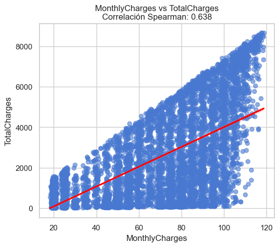
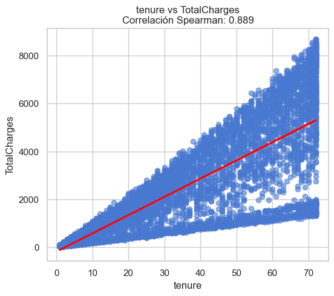
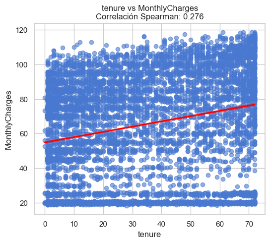
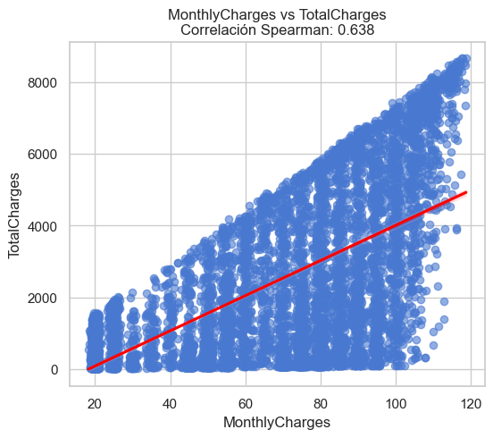
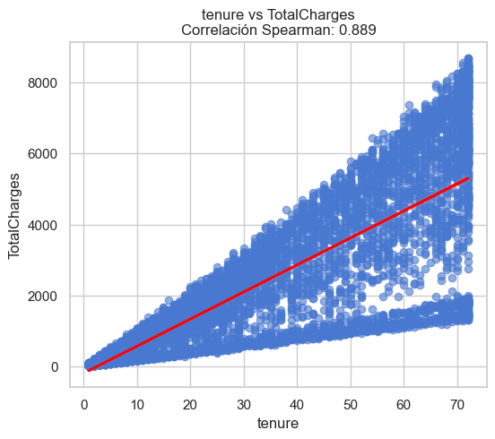
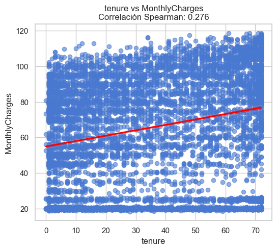
| Variable 1 | Variable 2 | Correlación Pearson | Correlación Spearman | Covarianza | |
|---|---|---|---|---|---|
| 1 | tenure | TotalCharges | 0.825880 | 0.889177 | 45950.743236 |
| 2 | MonthlyCharges | TotalCharges | 0.651065 | 0.638032 | 44401.333073 |
| 0 | tenure | MonthlyCharges | 0.247900 | 0.276417 | 183.196987 |
Podemos observar que tenure y total charges tienen la correlacion mas alta con 0.8259 en pearson y 0.8892 en spearman lo que significa que clientes con mayor tiempo en la empresa han acumulado más cargos totales. Monthlycharges y Totalcharges tiene una correlacion menor con 0.6511 y 0.6380 respectivamente lo que muestra que clientes con cargos mensuales altos tienden a tener cargos totales altos, pero no tanto como la permanencia. tenure y Monthlycharges lo que significa que los clientes más antiguos no necesariamente pagan más por mes.
Ahora realizamos el analisis bivariado de categoricas
analisis_bivariado_categorico(df,top=5,mostrar_graficos=True)
=== Relaciones categóricas más significativas (menor valor p) ===
| Variable 1 | Variable 2 | Chi-cuadrado | Grados de libertad | Valor p | V de Cramer | |
|---|---|---|---|---|---|---|
| 0 | PhoneService | InternetService | 1441.623387 | 2 | 0.0 | 0.452144 |
| 1 | OnlineBackup | StreamingMovies | 7174.586977 | 4 | 0.0 | 0.713584 |
| 2 | OnlineBackup | StreamingTV | 7195.057831 | 4 | 0.0 | 0.714602 |
| 3 | MultipleLines | InternetService | 2217.014120 | 4 | 0.0 | 0.396424 |
| 4 | OnlineBackup | DeviceProtection | 7284.450039 | 4 | 0.0 | 0.719030 |
=== Relaciones menos significativas ===
| Variable 1 | Variable 2 | Chi-cuadrado | Grados de libertad | Valor p | V de Cramer | |
|---|---|---|---|---|---|---|
| 148 | gender | Partner | 0.016356 | 1 | 0.898234 | 0.0 |
| 149 | gender | SeniorCitizen | 0.015604 | 1 | 0.900589 | 0.0 |
| 150 | Dependents | PhoneService | 0.010788 | 1 | 0.917277 | 0.0 |
| 151 | PhoneService | Contract | 0.111346 | 2 | 0.945848 | 0.0 |
| 152 | Partner | InternetService | 0.005798 | 2 | 0.997105 | 0.0 |
Gráficos de las relaciones más significativas:
PhoneService vs InternetService (p = 0.0000, V de Cramer = 0.452)
OnlineBackup vs StreamingMovies (p = 0.0000, V de Cramer = 0.714)
OnlineBackup vs StreamingTV (p = 0.0000, V de Cramer = 0.715)
MultipleLines vs InternetService (p = 0.0000, V de Cramer = 0.396)
OnlineBackup vs DeviceProtection (p = 0.0000, V de Cramer = 0.719)
| Variable 1 | Variable 2 | Chi-cuadrado | Grados de libertad | Valor p | V de Cramer | |
|---|---|---|---|---|---|---|
| 0 | PhoneService | InternetService | 1441.623387 | 2 | 0.000000 | 0.452144 |
| 1 | OnlineBackup | StreamingMovies | 7174.586977 | 4 | 0.000000 | 0.713584 |
| 2 | OnlineBackup | StreamingTV | 7195.057831 | 4 | 0.000000 | 0.714602 |
| 3 | MultipleLines | InternetService | 2217.014120 | 4 | 0.000000 | 0.396424 |
| 4 | OnlineBackup | DeviceProtection | 7284.450039 | 4 | 0.000000 | 0.719030 |
| ... | ... | ... | ... | ... | ... | ... |
| 148 | gender | Partner | 0.016356 | 1 | 0.898234 | 0.000000 |
| 149 | gender | SeniorCitizen | 0.015604 | 1 | 0.900589 | 0.000000 |
| 150 | Dependents | PhoneService | 0.010788 | 1 | 0.917277 | 0.000000 |
| 151 | PhoneService | Contract | 0.111346 | 2 | 0.945848 | 0.000000 |
| 152 | Partner | InternetService | 0.005798 | 2 | 0.997105 | 0.000000 |
153 rows × 6 columns
Podemos observar que las relaciones que son significativas y mas fuertes son principalmente las que tienen que ver con los servicios telefonicos y los servicios de internet con p-valores muy bajos y cramer alto
analisis_bivariado_cat_num(df,categoricas=categoricas,numericas=numericas)
 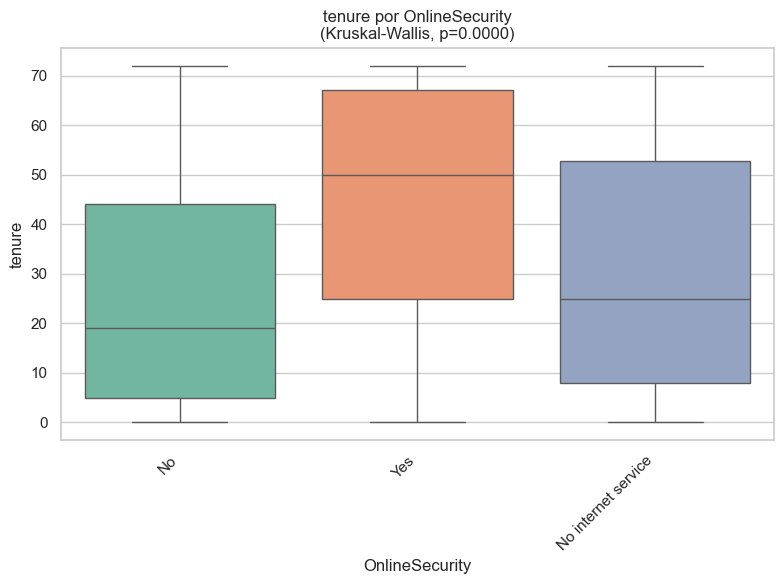
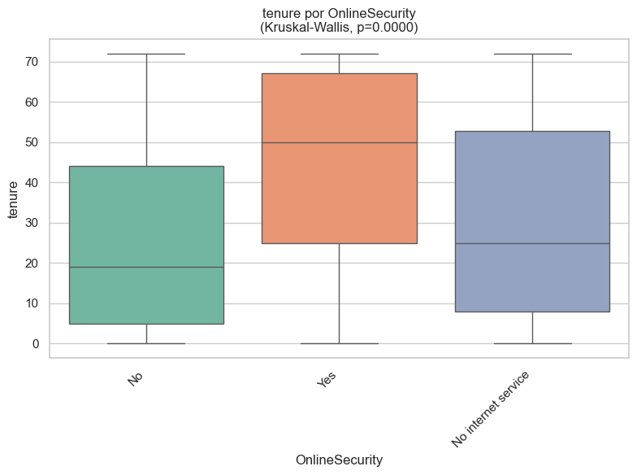
 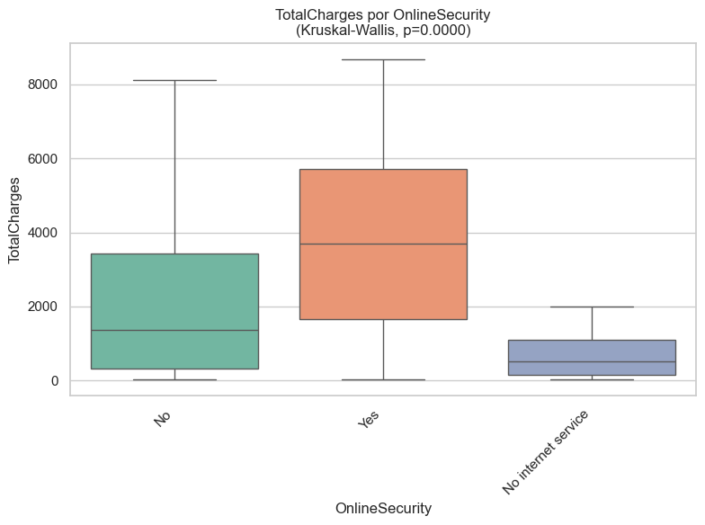
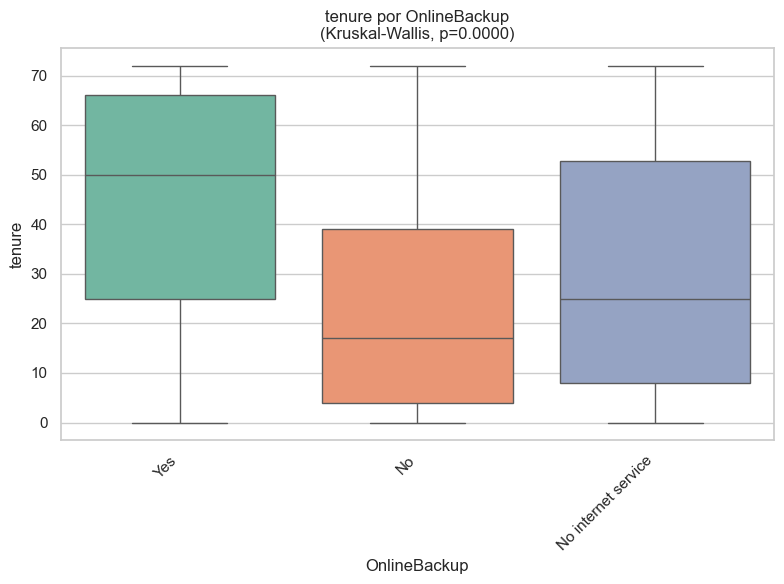
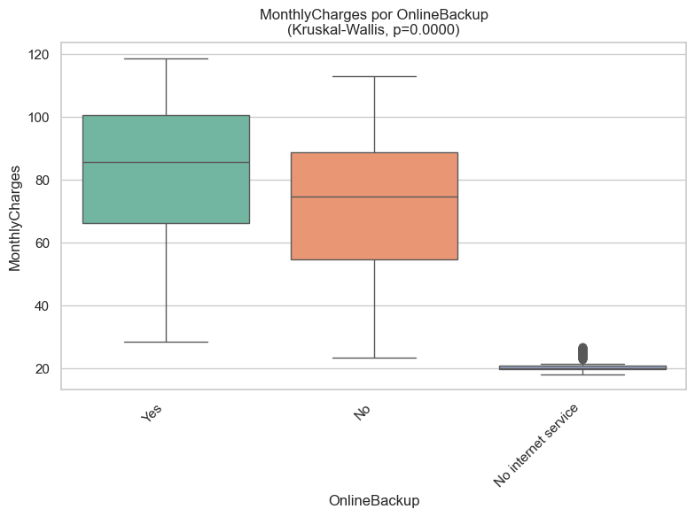
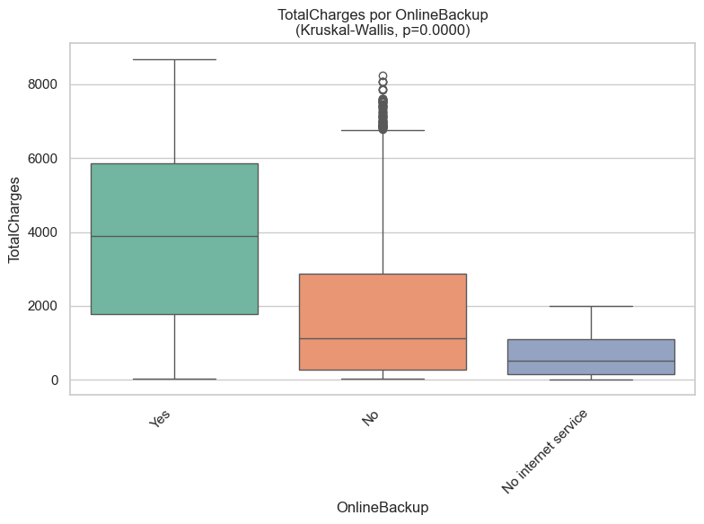
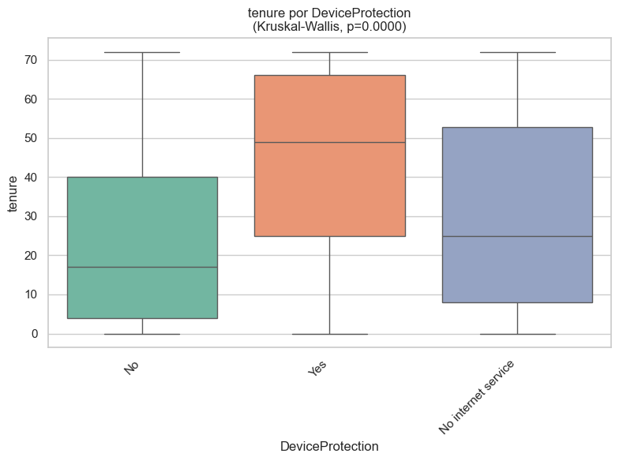
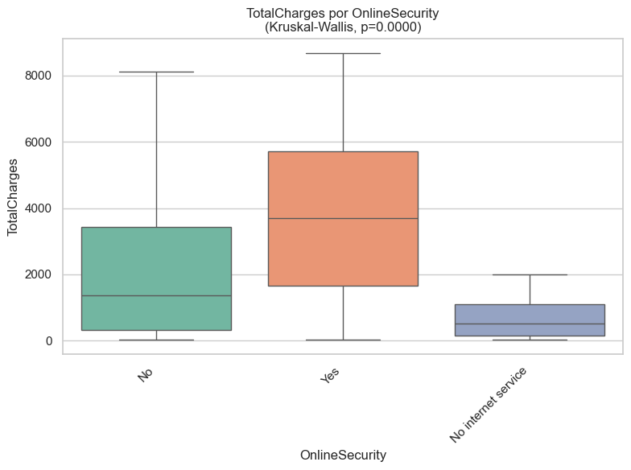
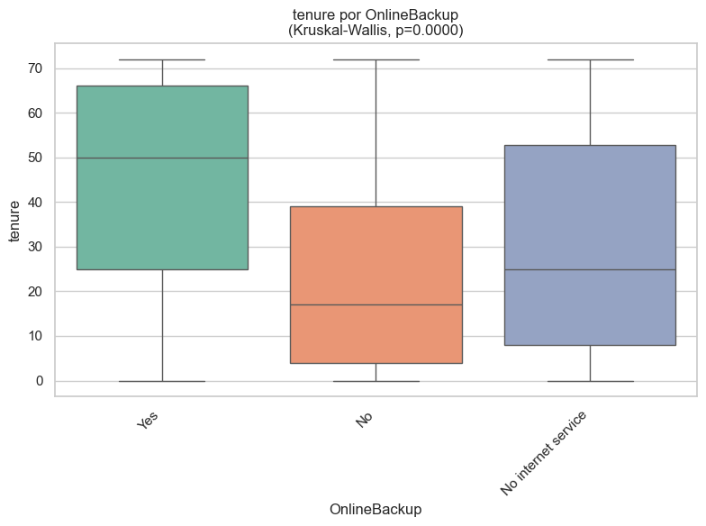
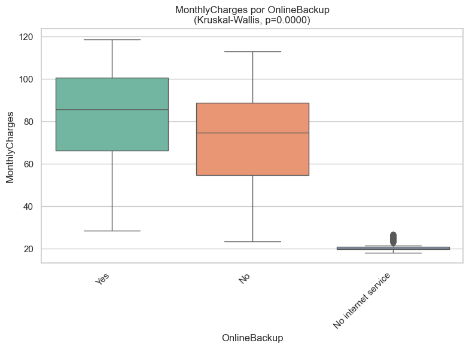
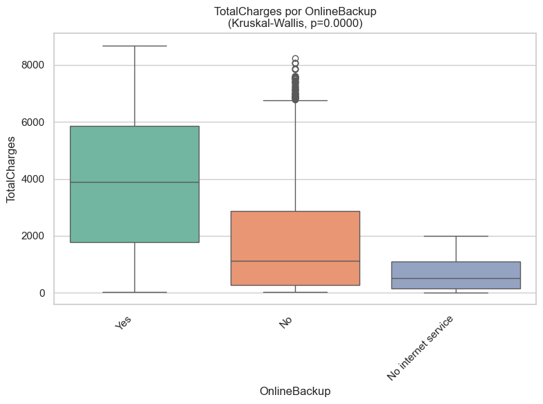
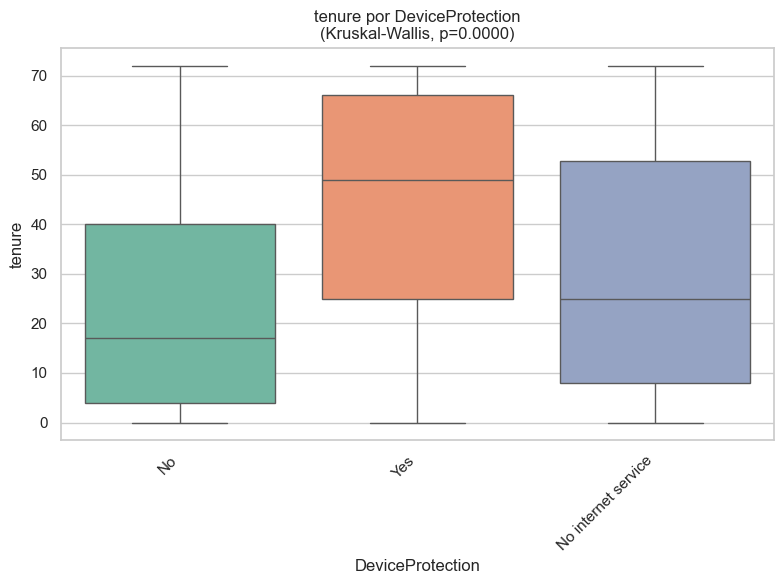
| Categórica | Numérica | Prueba | Normalidad_OK | Homocedasticidad_OK | p-Levene | Estadístico | p-valor | |
|---|---|---|---|---|---|---|---|---|
| 0 | gender | tenure | Kruskal-Wallis | False | True | 6.580347e-01 | 0.085589 | 7.698616e-01 |
| 1 | gender | MonthlyCharges | Kruskal-Wallis | False | True | 4.688119e-01 | 1.328765 | 2.490250e-01 |
| 2 | gender | TotalCharges | Kruskal-Wallis | False | True | 8.985335e-01 | 0.009748 | 9.213524e-01 |
| 3 | SeniorCitizen | tenure | Kruskal-Wallis | False | True | 1.737419e-01 | 2.424636 | 1.194410e-01 |
| 4 | SeniorCitizen | MonthlyCharges | Kruskal-Wallis | False | False | 2.968938e-59 | 344.145851 | 7.979832e-77 |
| 5 | SeniorCitizen | TotalCharges | Kruskal-Wallis | False | False | 3.726601e-07 | 80.871806 | 2.408455e-19 |
| 6 | Partner | tenure | Kruskal-Wallis | False | False | 7.152704e-21 | 1043.424215 | 6.540410e-229 |
| 7 | Partner | MonthlyCharges | Kruskal-Wallis | False | False | 8.582990e-03 | 82.843189 | 8.882778e-20 |
| 8 | Partner | TotalCharges | Kruskal-Wallis | False | False | 6.312156e-93 | 828.136615 | 4.118937e-182 |
| 9 | Dependents | tenure | Kruskal-Wallis | False | True | 2.588654e-01 | 189.805949 | 3.505003e-43 |
| 10 | Dependents | MonthlyCharges | Kruskal-Wallis | False | False | 1.217301e-12 | 80.639695 | 2.708633e-19 |
| 11 | Dependents | TotalCharges | Kruskal-Wallis | False | False | 1.585354e-02 | 48.308837 | 3.641076e-12 |
| 12 | PhoneService | tenure | Kruskal-Wallis | False | True | 4.122160e-01 | 0.506768 | 4.765412e-01 |
| 13 | PhoneService | MonthlyCharges | Kruskal-Wallis | False | False | 2.540924e-103 | 404.610290 | 5.461937e-90 |
| 14 | PhoneService | TotalCharges | Kruskal-Wallis | False | False | 2.493435e-28 | 50.691677 | 1.080769e-12 |
| 15 | MultipleLines | tenure | Kruskal-Wallis | False | False | 1.069234e-16 | 858.261297 | 4.274913e-187 |
| 16 | MultipleLines | MonthlyCharges | Kruskal-Wallis | False | False | 5.180522e-149 | 1983.536597 | 0.000000e+00 |
| 17 | MultipleLines | TotalCharges | Kruskal-Wallis | False | False | 3.604029e-238 | 1570.511181 | 0.000000e+00 |
| 18 | InternetService | tenure | Kruskal-Wallis | False | True | 1.679973e-01 | 11.725077 | 2.844015e-03 |
| 19 | InternetService | MonthlyCharges | Kruskal-Wallis | False | False | 0.000000e+00 | 5529.733603 | 0.000000e+00 |
| 20 | InternetService | TotalCharges | Kruskal-Wallis | False | False | 0.000000e+00 | 1244.151477 | 6.853927e-271 |
| 21 | OnlineSecurity | tenure | Kruskal-Wallis | False | False | 3.802765e-07 | 799.358778 | 2.639045e-174 |
| 22 | OnlineSecurity | MonthlyCharges | Kruskal-Wallis | False | False | 0.000000e+00 | 3572.499599 | 0.000000e+00 |
| 23 | OnlineSecurity | TotalCharges | Kruskal-Wallis | False | False | 1.311151e-289 | 1669.777859 | 0.000000e+00 |
| 24 | OnlineBackup | tenure | Kruskal-Wallis | False | False | 2.034348e-18 | 990.005719 | 1.054362e-215 |
| 25 | OnlineBackup | MonthlyCharges | Kruskal-Wallis | False | False | 0.000000e+00 | 3783.521270 | 0.000000e+00 |
| 26 | OnlineBackup | TotalCharges | Kruskal-Wallis | False | False | 0.000000e+00 | 2020.575935 | 0.000000e+00 |
| 27 | DeviceProtection | tenure | Kruskal-Wallis | False | False | 3.095717e-16 | 1008.269813 | 1.140229e-219 |
| 28 | DeviceProtection | MonthlyCharges | Kruskal-Wallis | False | False | 0.000000e+00 | 3922.424186 | 0.000000e+00 |
| 29 | DeviceProtection | TotalCharges | Kruskal-Wallis | False | False | 0.000000e+00 | 2121.757079 | 0.000000e+00 |
| 30 | TechSupport | tenure | Kruskal-Wallis | False | False | 4.757375e-07 | 789.708913 | 3.287671e-172 |
| 31 | TechSupport | MonthlyCharges | Kruskal-Wallis | False | False | 0.000000e+00 | 3615.800544 | 0.000000e+00 |
| 32 | TechSupport | TotalCharges | Kruskal-Wallis | False | False | 3.517162e-297 | 1729.415995 | 0.000000e+00 |
| 33 | StreamingTV | tenure | Kruskal-Wallis | False | False | 8.221994e-12 | 621.371045 | 1.177584e-135 |
| 34 | StreamingTV | MonthlyCharges | Kruskal-Wallis | False | False | 0.000000e+00 | 4587.700091 | 0.000000e+00 |
| 35 | StreamingTV | TotalCharges | Kruskal-Wallis | False | False | 0.000000e+00 | 2006.055266 | 0.000000e+00 |
| 36 | StreamingMovies | tenure | Kruskal-Wallis | False | False | 1.261256e-13 | 652.673792 | 1.877962e-142 |
| 37 | StreamingMovies | MonthlyCharges | Kruskal-Wallis | False | False | 0.000000e+00 | 4562.772023 | 0.000000e+00 |
| 38 | StreamingMovies | TotalCharges | Kruskal-Wallis | False | False | 0.000000e+00 | 2025.899938 | 0.000000e+00 |
| 39 | Contract | tenure | Kruskal-Wallis | False | False | 9.333912e-12 | 3139.236066 | 0.000000e+00 |
| 40 | Contract | MonthlyCharges | Kruskal-Wallis | False | False | 4.571288e-83 | 21.226197 | 2.459177e-05 |
| 41 | Contract | TotalCharges | Kruskal-Wallis | False | False | 2.366940e-224 | 1565.788245 | 0.000000e+00 |
| 42 | PaperlessBilling | tenure | Kruskal-Wallis | False | True | 8.754949e-01 | 0.417000 | 5.184377e-01 |
| 43 | PaperlessBilling | MonthlyCharges | Kruskal-Wallis | False | False | 7.013723e-32 | 843.012077 | 2.403050e-185 |
| 44 | PaperlessBilling | TotalCharges | Kruskal-Wallis | False | False | 9.910410e-35 | 166.603674 | 4.083202e-38 |
| 45 | PaymentMethod | tenure | Kruskal-Wallis | False | False | 9.885594e-14 | 1158.549349 | 7.218999e-251 |
| 46 | PaymentMethod | MonthlyCharges | Kruskal-Wallis | False | False | 1.087607e-51 | 1103.297368 | 7.009708e-239 |
| 47 | PaymentMethod | TotalCharges | Kruskal-Wallis | False | False | 8.911828e-136 | 1077.006307 | 3.544082e-233 |
| 48 | Churn | tenure | Kruskal-Wallis | False | False | 3.963540e-90 | 948.799692 | 2.419140e-208 |
| 49 | Churn | MonthlyCharges | Kruskal-Wallis | False | False | 1.026124e-78 | 240.342632 | 3.311286e-54 |
| 50 | Churn | TotalCharges | Kruskal-Wallis | False | False | 1.126148e-37 | 379.057767 | 1.995726e-84 |
Podemos observar que la gran mayoria de variables numericas se relacionan con las categoricas, la unica que no se relaciona es gender por lo que no se considerara para la prediccion
Analisis de correlaciones#
analizar_colinealidad_y_correlaciones(df,mostrar_graficos=True)
| Variable | VIF | Colinealidad | |
|---|---|---|---|
| 0 | tenure | 6.332432 | Aceptable |
| 1 | MonthlyCharges | 3.361075 | Aceptable |
| 2 | TotalCharges | 8.079181 | Aceptable |
Podemos observar que en cuanto a las correlaciones existen varias variables con correlaciones demasiado grandes entre si, al realizar modelos de arboles no se afectan demasiado por alta colinealidad por lo que se mantendran en el dataset